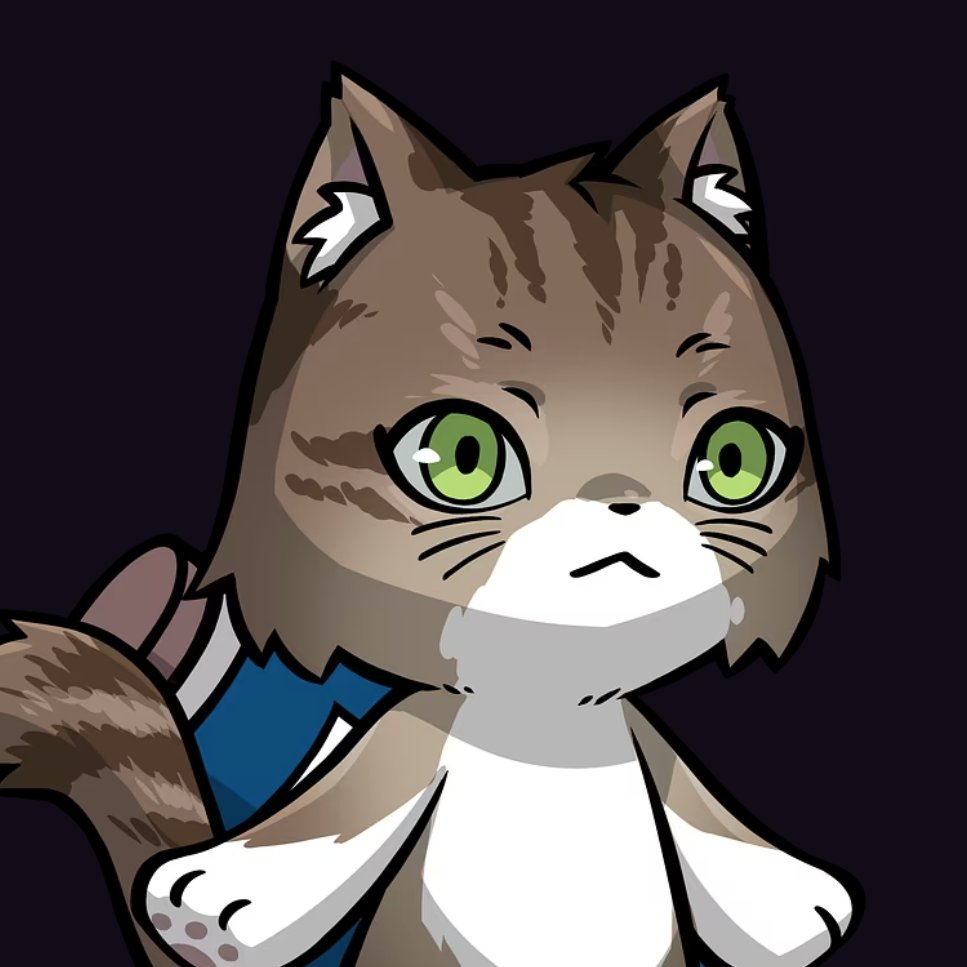

九州の夜から、気ままにコードを書く野良猫です。

はじめまして、Hammy The Catです。九州の片すみに暮らす、駆け出しの「野良バイブコーダー」。AIと一緒にコードを書く楽しさに目覚めて、思いついたものを気ままに形にしています。
このサイトに並んでいるのは、そんな夜更かしの産物たち。為替の計算ツールから、静かに今日の運勢を引けるおみくじまで、「あったらいいな」と「作ってみたいな」を原動力に、ひとつずつ増やしています。猫を愛で、ゲームで遊ぶ時間も大切な充電タイムです。
まだまだ寄り道の多い野良猫ですが、作ったものや学んだことはXとSubstackで発信中。同じようにものづくりを楽しむ方と、ゆるくつながれたらうれしいです🐾
迷えるバイブコーダーHammyの迷える作品集🐈❔どうぞお楽しみくださいませ👀
FX取引におけるマージン（必要証拠金）を簡単に計算できるツール。リアルタイムの為替レートと直感的なUIで、効率的なリスク管理をサポートします。
近未来ネオンテイストの経済指標カレンダー。インスタグラム風グラデーションと5段階の星評価システムで、日本時間での重要経済指標を視覚的に表示します。
静かな和の雰囲気で今日の運勢を引ける、おみくじアプリです。シンプルな操作で気軽に楽しめる小さなWeb体験です。
スポーツ遠征先で弁当が買えるお店を、すぐに見つけられるナビアプリ。慣れない土地でも、現在地から近い店をぱっと確認できます。
Thanks for visiting my portfolio! I'm always excited to discuss new opportunities and collaborate on interesting projects.
ポートフォリオをご覧いただき、ありがとうございます！
一緒にバイブコーディングを楽しみましょう❣💻